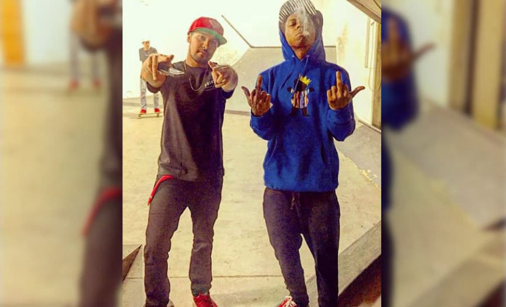
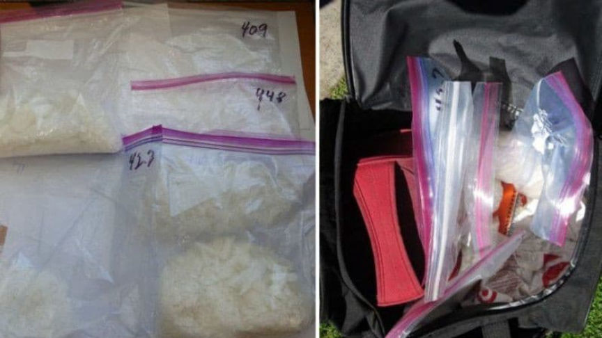
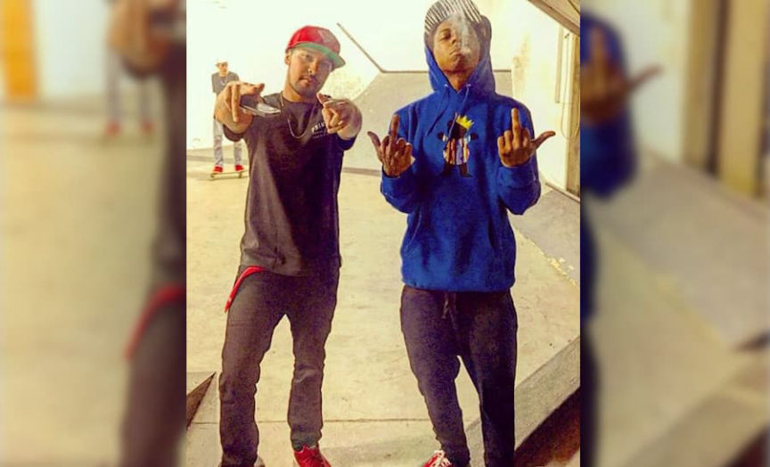
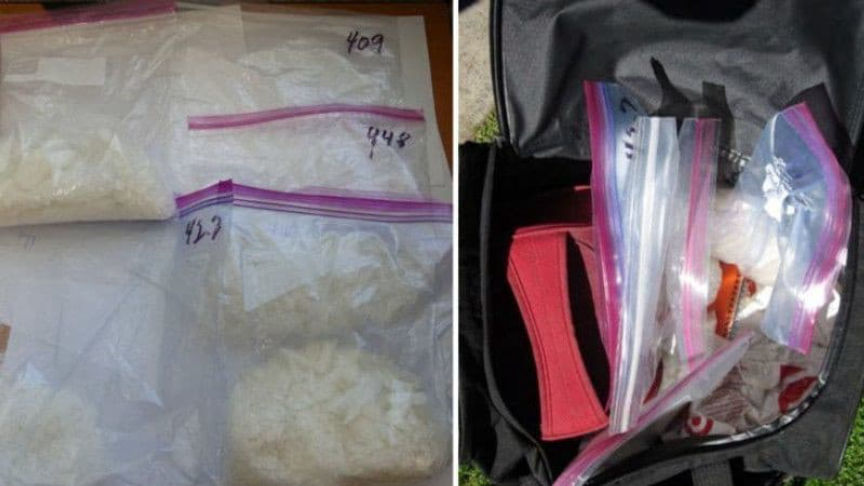

Ex-Pro Skater Heads to Prison for Supplying Vendors with Meth
~3 min read | Published on 2022-01-21, tagged DarkWeb, Darkweb-Vendor, Drugs, Sentenced using 568 words.
A former professional skateboarder in California was sentenced to 97 months in prison for selling methamphetamine and laundering Bitcoin for undercover federal assets.
United States District Judge David O. Carter sentenced Evan Jaime Hernandez, 35, of Long Beach, California, to 97 months in federal prison. In July 2021, Hernandez pleaded guilty to one count of distribution of methamphetamine and one count of laundering of monetary instruments.

Investigators identified Hernandez as the supplier of at least two darkweb vendors who sold the meth on “one of the world’s largest darknet marketplaces.” Court documents identified two of the vendors as William Glarner IV (aka “Billy”) and Brian Vancleave. Court documents that I have seen do not disclose the usernames of the accounts controlled by the co-conspirators. Glarner is currently serving a 10-year prison sentence after being convicted of one count of possession with intent to distribute methamphetamine in June 2019.
What we do know about Glarner is that he had conducted at least 1,500 transactions through his vendor accounts. He also had or used three different “monickers” on different marketplaces. It is not clear if the three accounts were different identities altogether or simply different variants of the same username on three markets, etc.

The Glarner investigation netted Glarner IV as well as his father, Glarner III. A federal grand jury convicted Glarner III of one count of possession to distribute methamphetamine and two counts of attempted distribution of methamphetamine. A federal judge sentenced him to 15 years in prison in September 2019.
In the comments section for the article on the Glarner III sentencing, someone left a comment asking if the Glarner duo used the username “Billiedakidd.” I was not able to find a vendor under that name. There is a “Billy” with an account on Black Market Reloaded but no other activity. A “Billythekid” account may have existed in 2019 but I am unable to find a matching Recon profile.
There is not much information available about Vancleave.
On March 9, 2018, Hernandez agreed to sell approximately two pounds of methamphetamine to a confidential source working for Homeland Security.
[img=]Feds searched an iCloud backup assosciated with Glarner IV and identified a meth supplier.[/img]
Investigations (HSI). Hernandez believed the HSI source was a money launderer. On March 21, 2018, Hernandez sold approximately 894.9 grams of methamphetamine to the CS for $5,000.
Hernandez was also responsible for laundering Bitcoin for the darkweb operations conducted by Glarner and Vancleave. Hernandez utilized the services of the HSI source to exchange Bitcoin, which was proceeds from illicit activity, into cash. Hernandez conducted four Bitcoin-cash transactions with this CS, all of which affected interstate commerce.
For example, on September 5, 2018, Hernandez exchanged approximately 7.95 Bitcoin for $50,000 in U.S. currency. During this transaction, Hernandez discussed the status of darkweb markets. The source of the exchanged Bitcoin was drug trafficking. In total, Hernandez conducted four Bitcoin-cash exchanges that totaled approximately $171,300.
One of the illicit transactions was listed in court documents as: <code>599863397de44ea98d947e837e7919b50e833e5a45b982cb3a9bf6ed93b57971</code>. (archive: 2JJ1K)
“[Hernandez] was involved in a highly sophisticated drug-trafficking operation, where he personally took on various roles to ensure its success: obtaining multiple types of narcotics, selling them directly to customers, and laundering money on the backend in a sophisticated manner,” prosecutors wrote in a sentencing memorandum.
Hernandez has been ordered to forfeit a 2010 Mercedes-Benz, approximately $35,000 in cash, and various watches, necklaces, rings, and other jewelry.
United States District Judge David O. Carter sentenced Evan Jaime Hernandez, 35, of Long Beach, California, to 97 months in federal prison. In July 2021, Hernandez pleaded guilty to one count of distribution of methamphetamine and one count of laundering of monetary instruments.

Hernandez and Dwayne Michael Carter Jr. aka Lil Wayne
Investigators identified Hernandez as the supplier of at least two darkweb vendors who sold the meth on “one of the world’s largest darknet marketplaces.” Court documents identified two of the vendors as William Glarner IV (aka “Billy”) and Brian Vancleave. Court documents that I have seen do not disclose the usernames of the accounts controlled by the co-conspirators. Glarner is currently serving a 10-year prison sentence after being convicted of one count of possession with intent to distribute methamphetamine in June 2019.
What we do know about Glarner is that he had conducted at least 1,500 transactions through his vendor accounts. He also had or used three different “monickers” on different marketplaces. It is not clear if the three accounts were different identities altogether or simply different variants of the same username on three markets, etc.

Methamphetamine seized during the investigation into the Glarner duo
The Glarner investigation netted Glarner IV as well as his father, Glarner III. A federal grand jury convicted Glarner III of one count of possession to distribute methamphetamine and two counts of attempted distribution of methamphetamine. A federal judge sentenced him to 15 years in prison in September 2019.
In the comments section for the article on the Glarner III sentencing, someone left a comment asking if the Glarner duo used the username “Billiedakidd.” I was not able to find a vendor under that name. There is a “Billy” with an account on Black Market Reloaded but no other activity. A “Billythekid” account may have existed in 2019 but I am unable to find a matching Recon profile.
There is not much information available about Vancleave.
On March 9, 2018, Hernandez agreed to sell approximately two pounds of methamphetamine to a confidential source working for Homeland Security.
[img=]Feds searched an iCloud backup assosciated with Glarner IV and identified a meth supplier.[/img]
Investigations (HSI). Hernandez believed the HSI source was a money launderer. On March 21, 2018, Hernandez sold approximately 894.9 grams of methamphetamine to the CS for $5,000.
Hernandez was also responsible for laundering Bitcoin for the darkweb operations conducted by Glarner and Vancleave. Hernandez utilized the services of the HSI source to exchange Bitcoin, which was proceeds from illicit activity, into cash. Hernandez conducted four Bitcoin-cash transactions with this CS, all of which affected interstate commerce.
For example, on September 5, 2018, Hernandez exchanged approximately 7.95 Bitcoin for $50,000 in U.S. currency. During this transaction, Hernandez discussed the status of darkweb markets. The source of the exchanged Bitcoin was drug trafficking. In total, Hernandez conducted four Bitcoin-cash exchanges that totaled approximately $171,300.
One of the illicit transactions was listed in court documents as: <code>599863397de44ea98d947e837e7919b50e833e5a45b982cb3a9bf6ed93b57971</code>. (archive: 2JJ1K)
“[Hernandez] was involved in a highly sophisticated drug-trafficking operation, where he personally took on various roles to ensure its success: obtaining multiple types of narcotics, selling them directly to customers, and laundering money on the backend in a sophisticated manner,” prosecutors wrote in a sentencing memorandum.
Hernandez has been ordered to forfeit a 2010 Mercedes-Benz, approximately $35,000 in cash, and various watches, necklaces, rings, and other jewelry.